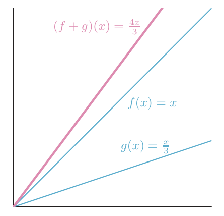
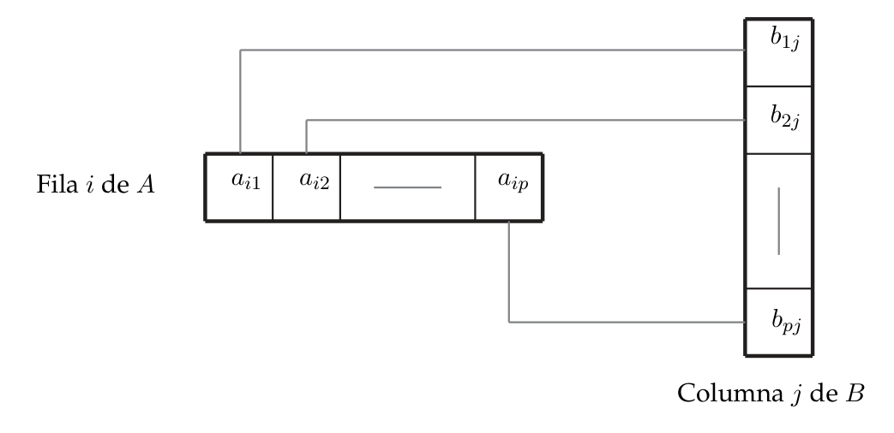

Operaciones con aplicaciones lineales y con matrices
Las aplicaciones lineales se pueden sumar, multiplicar por un número y encadenar (componer). Fijadas las bases, cada una de esas operaciones se traduce a una operación con las matrices asociadas: $f+g\leftrightarrow A+B$, $\lambda f\leftrightarrow\lambda A$ y $f\circ g\leftrightarrow AB$. Aquí aprendes a hacerlo sin equivocarte con el orden del producto.
0Antes de empezar U p.117-118
Una aplicación lineal «es» su matriz (una vez fijadas las bases). Por eso, operar con aplicaciones (sumarlas, escalarlas, encadenarlas) y operar con matrices (sumar, multiplicar por un número, multiplicar) son lo mismo dicho en dos idiomas. El producto de matrices, que al principio parece una regla rara de «fila por columna», es simplemente la matriz de «hacer una cosa y después la otra».
Qué necesitas saber ya
- Del tema 3.3: la matriz asociada (Def. 3.4, U p.116): la columna $j$ son las coordenadas de $f(e_j)$; tamaño (dim. de llegada)$\times$(dim. de partida); y la expresión $Y=AX$ (U p.117).
- Del tema 1.2: suma de matrices, producto por un escalar, producto de matrices y matriz identidad $I$ (aquí se justifica de dónde sale ese producto).
- Del tema 3.1: qué es una aplicación lineal (Def. 3.1, U p.101).
Mapa del tema
| Apartado | Qué contiene | Dónde |
|---|---|---|
| 1 La idea | Tabla «aplicaciones ↔ matrices»; $\mathcal L(V,W)\leftrightarrow\mathcal M_{n\times m}$ | U p.118 |
| 2 Suma y escalar | Def. 3.5-3.10, Ej. 3.20-3.22, estructura de espacio vectorial | U p.118-123 · L §2.1 p.93 |
| 3 Composición | Def. 3.11-3.13, Ej. 3.23-3.26, tamaños, algoritmo fila×columna | U p.123-128 · L §1.9, §2.1 p.79-96 |
| 4 Propiedades | Asociativa, distributiva, identidad; no conmutativa; Ej. 3.27 | U p.128-130 · L §2.1 p.97 |
| 5 Ejercicios del libro | E 3.30, 3.31 + 3 ejemplos propios (y enlaces a 3.24, 3.29) | E pp.106-108 |
| 6 Ejemplos de examen | 6 preguntas de convocatorias anteriores + 2 ejemplos propios, resueltos | X |
Casi siempre una de estas tareas: (a) «halla la matriz de $f\circ g$» (o la fórmula de $f\circ g$) a partir de las fórmulas de $f$ y $g$, comprobando tamaños y el orden; (b) «halla la matriz de $\lambda f+\mu g$»; (c) verdadero/falso sobre propiedades (¿conmutativa?, ¿neutro?, ¿producto nulo?); (d) usar el resultado: imagen de un vector, núcleo de $g\circ f$ (tema 3.2).
- Páginas de U. La cabecera de 3.4 aparece en la p.117 (compartida con el final de 3.3); la sección ocupa U p.117-130. E 3.4 contiene solo los ejercicios 3.30 (p.106) y 3.31 (p.108); 3.32 (p.110) ya es de 3.5.
- U p.128, identidad de la composición. U escribe «existe la aplicación identidad $i$ de $V$ en $V$, que verifica $i\circ g=g$, $\forall g\in\mathcal L(V,W)$». Para $g:V\to W$ la identidad que cumple $i\circ g=g$ es la de $W$ (con la de $V$ lo que vale es $g\circ i_V=g$). La versión con matrices ($I$ de orden $p$, $IB=B$) sí es coherente. E 3.31 C remite a este punto.
- E 3.30 no explica de dónde sale cada opción falsa (C es la matriz de $f_B\circ f_A$; D describiría una matriz $1\times2$) y escribe «$f_B(f_A)(x)$» por $f_B(f_A(x))$. E 3.31 da para «no conmutativa» un ejemplo en que $f_B\circ f_A$ ni siquiera existe (aquí se añade otro con endomorfismos) y lo del «neutro» lo dice solo de pasada («la matriz unidad correspondiente»), sin distinguir $i_V$ de $i_W$.
- Aplicación inversa e isomorfismos no están en U §3.4 (llegan con la matriz inversa y los cambios de base en §3.5, U p.131). Aquí solo hay un anticipo en el ejemplo propio 3.
- Lay no define $f+g$ ni $\lambda f$ para espacios abstractos (solo sus matrices). Se cita §1.9 p.77-80 (problema de práctica: trasquilado + reflexión) y §2.1 p.93-97.
- Las soluciones oficiales de examen de este tema son correctas pero muy breves («matriz del Ejemplo 3.24»); aquí se desarrolla el proceso completo.
$A_f$ es la matriz asociada a $f$ (en las bases canónicas salvo que se diga otra cosa). $\mathcal L(V,W)$ es el conjunto de aplicaciones lineales de $V$ en $W$ y $\mathcal M_{n\times m}$ el de matrices $n\times m$ (U p.118). Coordenadas en columna. El símbolo «$\circ$» se lee «compuesta con»: $f\circ g$ = «$f$ después de $g$».
U p.1181La idea: cada operación con aplicaciones tiene su gemela con matrices U p.117-118
Piensa en una cadena de montaje. Cada aplicación lineal es una máquina: entra un vector, sale otro. Puedes (1) poner dos máquinas en paralelo y sumar lo que sale ($f+g$), (2) amplificar la salida de una máquina ($\lambda f$), o (3) conectar la salida de una máquina con la entrada de otra ($f\circ g$). Cada máquina tiene su matriz; las tres conexiones tienen sus matrices, que se obtienen operando con las de las máquinas originales.
Como al ponerte calcetines y luego zapatos no es lo mismo que zapatos y luego calcetines, el orden importa en la composición, y por eso el producto de matrices no es conmutativo.
| Con aplicaciones | Con matrices | Cuándo se puede |
|---|---|---|
| $f+g$ : $(f+g)(v)=f(v)+g(v)$ | $A+B$ (elemento a elemento) | $f,g$ con el mismo espacio inicial y el mismo final (fijadas las bases, entonces $A,B$ son del mismo tamaño) |
| $\lambda f$ : $(\lambda f)(v)=\lambda\,f(v)$ | $\lambda A$ (cada elemento por $\lambda$) | siempre |
| $f\circ g$ : $(f\circ g)(x)=f(g(x))$ («primero $g$, luego $f$») | $AB$ (la de $f$ a la izquierda) | el final de $g$ = el inicial de $f$ (fijadas las bases, entonces nº de columnas de $A$ = nº de filas de $B$) |
Se denota $\mathcal L(V,W)$ al conjunto de todas las aplicaciones lineales entre los espacios reales $V$ (de dimensión $m$) y $W$ (de dimensión $n$), y $\mathcal M_{n\times m}$ al conjunto de matrices de orden $n\times m$. Fijadas una base en $V$ y otra en $W$, la correspondencia que asigna a cada aplicación su matriz asociada entre $\mathcal L(V,W)$ y $\mathcal M_{n\times m}$ es biyectiva: cada aplicación tiene una matriz y cada matriz $n\times m$ es la de una única aplicación.
U p.1182Suma y producto por un escalar U p.118-121
Sumar aplicaciones es sumar sus resultados vector a vector: a cada $v$ le aplicas $f$ por un lado, $g$ por otro, y sumas. Solo tiene sentido si ambas devuelven vectores del mismo espacio (y aceptan los mismos vectores). En matrices, sumar elemento a elemento es lo mismo, y exige matrices del mismo tamaño: no se puede sumar una $3\times2$ con una $2\times3$.
Si $f,g\in\mathcal L(V,W)$, su suma $f+g$ es la aplicación tal que $(f+g)(v)=f(v)+g(v)$ para todo $v\in V$.
U p.118Si $A=(a_{ij})$, $B=(b_{ij})\in\mathcal M_{n\times m}$ son las matrices asociadas a $f$, $g$ en las mismas bases, entonces $$A+B=(a_{ij}+b_{ij})\in\mathcal M_{n\times m}$$ es la matriz asociada a $f+g$, y su expresión matricial es $Y=(A+B)X$.
U p.119$f(x)=x$ y $g(x)=\dfrac x3$ son lineales de $\mathbb R$ en $\mathbb R$.
- $(f+g)(x)=f(x)+g(x)=x+\dfrac x3=\dfrac{4x}{3}$ para todo $x$.
- En $x=3$: $f(3)=3$, $g(3)=1$ y $(f+g)(3)=4$. Con matrices $1\times1$: $(1)+\left(\tfrac13\right)=\left(\tfrac43\right)$.

$f$: $y_1=x_1+2x_2-3x_3,\ y_2=-5x_2+x_3$; $g$: $y_1=3x_1-5x_2+6x_3,\ y_2=2x_1-2x_3$.
- Matrices (cada ecuación es una fila): $$A=\begin{pmatrix}1&2&-3\cr0&-5&1\end{pmatrix},\qquad B=\begin{pmatrix}3&-5&6\cr2&0&-2\end{pmatrix}.$$
- Mismo tamaño ($2\times3$): se pueden sumar (Def. 3.7): $$A+B=\begin{pmatrix}4&-3&3\cr2&-5&-1\end{pmatrix}.$$
- Ecuaciones de $f+g$: $y_1=4x_1-3x_2+3x_3$, $y_2=2x_1-5x_2-x_3$. Es lo mismo que sumar las ecuaciones término a término.
Si $f\in\mathcal L(V,W)$ y $\lambda\in\mathbb R$, $\lambda f$ es la aplicación con $(\lambda f)(v)=\lambda\,f(v)$ (Def. 3.8, p.120). Su expresión matricial es $Y=(\lambda A)X$ (Def. 3.9) y, si $A=(a_{ij})$ es la matriz de $f$, $\lambda A=(\lambda a_{ij})$ es la matriz de $\lambda f$ (Def. 3.10, p.121).
U p.120-121Con las $A$, $B$ del Ej. 3.21 (bases canónicas):
- Multiplicar por los escalares (cada elemento): $2A=\begin{pmatrix}2&4&-6\cr0&-10&2\end{pmatrix}$ y $-3B=\begin{pmatrix}-9&15&-18\cr-6&0&6\end{pmatrix}$.
- Sumar: $$2A-3B=\begin{pmatrix}-7&19&-24\cr-6&-10&8\end{pmatrix}.$$
- Ecuaciones: $y_1=-7x_1+19x_2-24x_3$, $y_2=-6x_1-10x_2+8x_3$.
Lay define la suma de matrices por columnas (la suma $A+B$ tiene como columnas las sumas de las columnas correspondientes) y exige «del mismo tamaño»; el múltiplo $rA$ tiene como columnas $r$ veces las de $A$. Teorema 1: $A+B=B+A$, $(A+B)+C=A+(B+C)$, $A+0=A$, $r(A+B)=rA+rB$, $(r+s)A=rA+sA$, $r(sA)=(rs)A$.
L §2.1 p.93El conjunto $\mathcal L(V,W)$ con la suma de aplicaciones y el producto por escalares es un espacio vectorial: la suma es asociativa (S1), tiene neutro, la aplicación nula $0(v)=0\in W$ (S2), cada $f$ tiene opuesta $(-f)(v)=-f(v)$ (S3) y es conmutativa (S4); y se cumplen E1 $\lambda(f+g)=\lambda f+\lambda g$, E2 $(\lambda+\mu)f=\lambda f+\mu f$, E3 $\lambda(\mu f)=(\lambda\mu)f$ y E4 $1f=f$ (U p.122). Lo mismo, con la matriz nula y $-A=(-a_{ij})$, vale para $\mathcal M_{n\times m}$ (U p.123). Tienen «la misma estructura algebraica».
Para qué sirve: permite tratar una combinación $\lambda f+\mu g$ como un vector más, y su matriz es la misma combinación $\lambda A+\mu B$ (Ej. 3.22).
U p.122-123Sumar lo que no se puede sumar. $f:\mathbb R^2\to\mathbb R^3$ y $h:\mathbb R^3\to\mathbb R^2$ no se pueden sumar (ni sus matrices $3\times2$ y $2\times3$). Y las matrices deben estar en las mismas bases (Def. 3.7): si una viene en canónicas y otra en otra base, primero hay que ponerlas en la misma.
3Composición de aplicaciones y producto de matrices U p.123-128
Componer es encadenar: el vector que sale de la primera máquina entra en la segunda. Si $g$ lleva $V$ a $W$ y $f$ lleva $W$ a $U$, el viaje completo $V\to W\to U$ es otra aplicación lineal, $f\circ g$. Se escribe con $f$ a la izquierda porque es como se escribe $f(g(x))$: lo de dentro se hace primero. Y el producto de matrices está diseñado para que la matriz del viaje completo sea el producto de las matrices de cada tramo.
Si $V,W,U$ son espacios vectoriales reales y $g:V\to W$, $f:W\to U$ son lineales, la composición $f\circ g:V\to U$ es la aplicación con $$(f\circ g)(x)=f\big(g(x)\big),\qquad\forall x\in V.$$ Solo se puede formar si el espacio de llegada de $g$ es el de partida de $f$. El orden en que se escriben $f$ y $g$ es el inverso al que se aplican al vector $x$.
U p.123-124$g:\mathbb R^2\to\mathbb R$, $g(x_1,x_2)=x_1-x_2$ y $f:\mathbb R\to\mathbb R^3$, $f(y)=(y,0,2y)$.
- ¿Se puede componer? $g$ llega a $\mathbb R$ y $f$ sale de $\mathbb R$: sí. $f\circ g:\mathbb R^2\to\mathbb R^3$.
- Sustituir: $(f\circ g)(x_1,x_2)=f(x_1-x_2)=(x_1-x_2,\ 0,\ 2x_1-2x_2)$. Se escribe $f\circ g$ pero se aplica primero $g$.
Si $\operatorname{Dim}V=m$, $\operatorname{Dim}W=p$ y $\operatorname{Dim}U=n$, la matriz $B$ de $g$ es de orden $p\times m$ y la matriz $A$ de $f$ es de orden $n\times p$. La matriz asociada a $f\circ g$ es $$C=AB\ \ (\text{orden }n\times m),\qquad Y=(AB)X.$$ La matriz de la aplicación que actúa primero ($g$) va a la derecha.
Por qué: $g$ transforma coordenadas así, $X\mapsto BX$; luego $f$ hace $Z\mapsto AZ$. Encadenando, $X\mapsto A(BX)=(AB)X$.
U p.125-126- Matriz de $g$ ($\mathbb R^2\to\mathbb R$): $g(1,0)=1$, $g(0,1)=-1$, luego $B=\begin{pmatrix}1&-1\end{pmatrix}$, de orden $1\times2$.
- Matriz de $f$ ($\mathbb R\to\mathbb R^3$): $f(1)=(1,0,2)$, luego $A=\begin{pmatrix}1\cr0\cr2\end{pmatrix}$, de orden $3\times1$.
- Tamaños: $(3\times1)(1\times2)=3\times2$: se puede, y $f\circ g$ tendrá matriz $3\times2$ (de $\mathbb R^2$ a $\mathbb R^3$ ✓).
- Producto (Ej. 3.25): $$C=AB=\begin{pmatrix}1\cr0\cr2\end{pmatrix}\begin{pmatrix}1&-1\end{pmatrix}=\begin{pmatrix}1&-1\cr0&0\cr2&-2\end{pmatrix}.$$
- Elemento a elemento (Ej. 3.26, algoritmo de U p.127): $c_{11}=1\cdot1=1$, $c_{12}=1\cdot(-1)=-1$, $c_{21}=0$, $c_{22}=0$, $c_{31}=2\cdot1=2$, $c_{32}=2\cdot(-1)=-2$.
- Comprobación con la sustitución del Ej. 3.23: $(x_1-x_2,\ 0,\ 2x_1-2x_2)$ tiene como matriz $\begin{pmatrix}1&-1\cr0&0\cr2&-2\end{pmatrix}$ ✓.
Si $A=(a_{ik})\in\mathcal M_{n\times p}$ y $B=(b_{kj})\in\mathcal M_{p\times m}$, el elemento $c_{ij}$ (fila $i$, columna $j$) del producto $C=AB$ es $$c_{ij}=a_{i1}b_{1j}+a_{i2}b_{2j}+\dots+a_{ip}b_{pj}.$$ Se multiplica la fila $i$ de $A$ por la columna $j$ de $B$: primero por primero, segundo por segundo… y se suma.

Aquí se calcula, elemento a elemento, el producto $AB$ del Ej. 3.27 de U ($A$ es la matriz de $f:\mathbb R^3\to\mathbb R^2$ y $B$ la de $g:\mathbb R^2\to\mathbb R^3$, así que $AB$ es la matriz de $f\circ g$). Observa cómo se emparejan fila y columna, y que el resultado es $2\times2$. Después calcula tú $BA$ (será $3 imes3$) y comprueba que no coincide con $AB$. Con «✎» puedes cambiar los datos; si los tamaños no encajan no hay producto.
PComposición como producto. Si $B$ multiplica a $x$ se obtiene $Bx$, y si luego se multiplica por $A$ se obtiene $A(Bx)$: una composición de transformaciones lineales. La definición de $AB$ por columnas, $AB=[A\mathbf b_1\ \cdots\ A\mathbf b_p]$, hace que $A(Bx)=(AB)x$. «La multiplicación de matrices corresponde a la composición de transformaciones lineales» (§2.1, p.94-95). Regla fila-columna: $(AB)_{ij}=a_{i1}b_{1j}+\dots+a_{in}b_{nj}$ (p.96).
Un ejemplo geométrico (Lay §1.9). Un trasquilado horizontal seguido de una reflexión en el eje $x_2$. Primero $e_1$ no se altera por el trasquilado y la reflexión lo lleva a $-e_1$: $T(e_1)=-e_1$. Segundo, el trasquilado envía $e_2$ a $e_2-0{,}5\,e_1$ y la reflexión lo convierte en $e_2+0{,}5\,e_1$: $T(e_2)=e_2+0{,}5\,e_1$. La matriz del movimiento compuesto es $\begin{pmatrix}-1&0{,}5\cr0&1\end{pmatrix}$, que es el producto $\begin{pmatrix}-1&0\cr0&1\end{pmatrix}\begin{pmatrix}1&-0{,}5\cr0&1\end{pmatrix}$ (reflexión a la izquierda: actúa en segundo lugar).
L §2.1 p.94-96 L §1.9 p.77-80- Multiplicar en el orden en que se leen las letras. Para $f\circ g$ la matriz es $A_fA_g$, no $A_gA_f$. La que actúa primero, a la derecha.
- No comprobar tamaños. Antes de multiplicar: «columnas de la izquierda = filas de la derecha». Si no, esa composición no existe.
- Matrices traspuestas. $f:\mathbb R\to\mathbb R^3$ tiene matriz columna $3\times1$; $g:\mathbb R^2\to\mathbb R$, matriz fila $1\times2$.
- Multiplicar elemento a elemento. El producto de matrices no es «el producto de cada elemento por su compañero».
4Propiedades y no conmutatividad U p.128-130
| Aplicaciones | Matrices |
|---|---|
| Asociativa: $(f\circ g)\circ h=f\circ(g\circ h)$ | $(AB)C=A(BC)$ |
| Identidad $i$: $i\circ g=g$ y $f\circ i=f$ (la identidad del espacio que corresponda) | $IB=B$ y $AI=A$ (la $I$ del orden que corresponda) |
| No es conmutativa: $f\circ g$ puede ser distinta de $g\circ f$; en general ni siquiera se puede hacer $g\circ f$ | $AB$ puede ser distinto de $BA$; en general ni siquiera se puede hacer $BA$ |
| Distributiva: $h\circ(f+g)=h\circ f+h\circ g$; $(f+g)\circ h=f\circ h+g\circ h$ | $A(B+C)=AB+AC$; $(A+B)C=AC+BC$ |
| Con escalares: $\lambda(f\circ g)=(\lambda f)\circ g=f\circ(\lambda g)$ | $\lambda(AB)=(\lambda A)B=A(\lambda B)$ |
Lay (Teorema 2, p.97) recoge las mismas para matrices, e $I_mA=A=AI_n$.
U p.128 L §2.1 p.97Que $(AB)C=A(BC)$ se ve directamente con aplicaciones: $(f\circ g)\circ h$ y $f\circ(g\circ h)$ hacen lo mismo («$h$, luego $g$, luego $f$»); basta con ver el producto de matrices como composición. Y que $AB\ne BA$ también: «calcetines y luego zapatos» no es «zapatos y luego calcetines».
$f:\mathbb R^3\to\mathbb R^2$, $f(x_1,x_2,x_3)=(x_1-x_3,\ x_2+x_3)$; $g:\mathbb R^2\to\mathbb R^3$, $g(x_1,x_2)=(x_1+x_2,\ x_1-x_2,\ 2x_1+3x_2)$. Se piden las ecuaciones de $f\circ g$ y $g\circ f$ y comprobar con matrices que el producto no es conmutativo.
- Diagramas de espacios. $\mathbb R^2\xrightarrow{g}\mathbb R^3\xrightarrow{f}\mathbb R^2$ da $f\circ g:\mathbb R^2\to\mathbb R^2$; $\mathbb R^3\xrightarrow{f}\mathbb R^2\xrightarrow{g}\mathbb R^3$ da $g\circ f:\mathbb R^3\to\mathbb R^3$. Existen las dos.
- Matrices (columnas = imágenes de la base canónica): $$A=\begin{pmatrix}1&0&-1\cr0&1&1\end{pmatrix}\ (2\times3),\qquad B=\begin{pmatrix}1&1\cr1&-1\cr2&3\end{pmatrix}\ (3\times2).$$
- $f\circ g$ (primero $g$): $AB$ es $(2\times3)(3\times2)=2\times2$: $$\begin{aligned}AB&=\begin{pmatrix}1+0-2&1+0-3\cr0+1+2&0-1+3\end{pmatrix}\cr&=\begin{pmatrix}-1&-2\cr3&2\end{pmatrix},\end{aligned}$$ es decir, $(f\circ g)(x_1,x_2)=(-x_1-2x_2,\ 3x_1+2x_2)$.
- $g\circ f$ (primero $f$): $BA$ es $(3\times2)(2\times3)=3\times3$: $$BA=\begin{pmatrix}1&1&0\cr1&-1&-2\cr2&3&1\end{pmatrix},\qquad (g\circ f)(x)=(x_1+x_2,\ x_1-x_2-2x_3,\ 2x_1+3x_2+x_3).$$
- Comprobación de una entrada con la definición: primera componente de $g(f(x))$: $(x_1-x_3)+(x_2+x_3)=x_1+x_2$ ✓.
- Conclusión: $AB\neq BA$ (ni siquiera tienen el mismo tamaño: $2\times2$ frente a $3\times3$).
U añade: «decir que el producto no es conmutativo no excluye la posibilidad de que en algún caso concreto sí se verifique $AB=BA$» (por ejemplo, $A$ e $I$, o $A$ consigo misma).
U p.129-130- $AB=BA$ (falso en general).
- $AB=0\Rightarrow A=0$ o $B=0$ (falso: hay matrices no nulas con producto nulo; ver E 3.31 B).
- $(A+B)^2=A^2+2AB+B^2$ (solo si $AB=BA$; en general $(A+B)^2=A^2+AB+BA+B^2$).
5Ejercicios del libro, resueltos E p.105-108
E tiene dos ejercicios propios de esta sección. Los de frontera 3.24 y 3.29 ya están resueltos en el tema 3.2 (ver al final), y los ejemplos de U 3.20-3.27 están en los apartados 2-4.
Ejercicio 3.30 — $f_A+2f_B$, $2f_B$, $f_A\circ f_B$, $f_B\circ f_A$ en $\mathbb R^2$ E p.106
Si $f_A(x_1,x_2)=(x_1,2x_2)$ y $f_B(x_1,x_2)=(x_1-x_2,-x_1+x_2)$ son endomorfismos de $\mathbb R^2$, se pide comprobar si es cierta alguna de las opciones siguientes: A) Las filas de la matriz asociada a $f_A+2f_B$ son $(3,-2)$ y $(-2,4)$. B) Las filas de la matriz asociada a $2f_B$ son $(2,-1)$ y $(-2,1)$. C) Las filas de la asociada a $f_A\circ f_B$ son $(1,-2)$ y $(-1,2)$. D) Las filas de la asociada a $f_B\circ f_A$ son $(1,-1)$.
Qué se pide. Hay dos endomorfismos de $\mathbb R^2$ y hay que hallar la matriz (en la base canónica, porque no se dice otra) de cuatro aplicaciones construidas con ellos: una combinación $f_A+2f_B$, un múltiplo $2f_B$ y las dos composiciones. Después se comparan sus filas con las de cada opción. Puede haber varias ciertas.
- Matriz de $f_A$ (Def. 3.4, U p.116; columna $j$ = $f_A(e_j)$): $f_A(1,0)=(1,0)$, $f_A(0,1)=(0,2)$, luego $A=\begin{pmatrix}1&0\cr0&2\end{pmatrix}$.
- Matriz de $f_B$: $f_B(1,0)=(1,-1)$, $f_B(0,1)=(-1,1)$, luego $B=\begin{pmatrix}1&-1\cr-1&1\end{pmatrix}$. Comprobación con $Y=BX$: $\begin{pmatrix}1&-1\cr-1&1\end{pmatrix}\binom{x_1}{x_2}=\binom{x_1-x_2}{-x_1+x_2}$ ✓.
- Opción A: $f_A+2f_B$. Ambas van de $\mathbb R^2$ a $\mathbb R^2$, así que se pueden sumar (Def. 3.5). Su matriz es $A+2B$ (Def. 3.7 y 3.10): $$A+2B=\begin{pmatrix}1&0\cr0&2\end{pmatrix}+\begin{pmatrix}2&-2\cr-2&2\end{pmatrix}=\begin{pmatrix}3&-2\cr-2&4\end{pmatrix}.$$ Filas $(3,-2)$ y $(-2,4)$: A es cierta. Con la definición: $(f_A+2f_B)(x_1,x_2)=(x_1,2x_2)+2(x_1-x_2,-x_1+x_2)=(3x_1-2x_2,\,-2x_1+4x_2)$ ✓.
- Opción B: $2f_B$. Se multiplica cada elemento por 2: $2B=\begin{pmatrix}2&-2\cr-2&2\end{pmatrix}$. Filas $(2,-2)$ y $(-2,2)$, no $(2,-1)$ y $(-2,1)$: B es falsa. (Error de la opción: multiplicar por 2 solo la primera columna. Contraejemplo: $2f_B(0,1)=(-2,2)$, pero la matriz propuesta envía $(0,1)$ a $(-1,1)$.)
- Opción C: $f_A\circ f_B$. Primero actúa $f_B$ y después $f_A$, así que la matriz es $AB$ (la de $f_A$ a la izquierda): $$AB=\begin{pmatrix}1&0\cr0&2\end{pmatrix}\begin{pmatrix}1&-1\cr-1&1\end{pmatrix}=\begin{pmatrix}1&-1\cr-2&2\end{pmatrix}.$$ Filas $(1,-1)$ y $(-2,2)$, no $(1,-2)$ y $(-1,2)$: C es falsa. Con la definición: $f_A(f_B(x_1,x_2))=f_A(x_1-x_2,-x_1+x_2)=(x_1-x_2,\,-2x_1+2x_2)$ ✓. De dónde sale la opción C: sus filas son las de $BA$ (siguiente paso), la matriz de $f_B\circ f_A$: es la trampa del orden.
- Opción D: $f_B\circ f_A$. Primero $f_A$, luego $f_B$; matriz $BA$: $$BA=\begin{pmatrix}1&-1\cr-1&1\end{pmatrix}\begin{pmatrix}1&0\cr0&2\end{pmatrix}=\begin{pmatrix}1&-2\cr-1&2\end{pmatrix}.$$ Comprobación: $f_B(f_A(x_1,x_2))=f_B(x_1,2x_2)=(x_1-2x_2,\,-x_1+2x_2)$ ✓. La opción D da una sola fila $(1,-1)$: sería una matriz $1\times2$, una aplicación $\mathbb R^2\to\mathbb R$, pero $f_B\circ f_A$ va de $\mathbb R^2$ a $\mathbb R^2$ y su matriz es $2\times2$. Además la primera fila de $BA$ es $(1,-2)$. D es falsa.
- Conclusión: solo A es cierta (coincide con E pp.106-107).
- Observación (no conmutatividad): $AB=\begin{pmatrix}1&-1\cr-2&2\end{pmatrix}\neq\begin{pmatrix}1&-2\cr-1&2\end{pmatrix}=BA$: $f_A\circ f_B\neq f_B\circ f_A$ aunque ambas existan y sean del mismo tamaño (U p.128). (Verificado con sympy.)
Error típico: para $f_A\circ f_B$ multiplicar $BA$ «porque $f_B$ actúa primero» (opción C). El orden de escritura de $f_A\circ f_B$ y de $AB$ es el mismo; es el orden de aplicación el que va al revés: $(f_A\circ f_B)(X)=A(BX)=(AB)X$.
Nota sobre el libro: E no dice por qué fallan B, C y D, y escribe «$f_B(f_A)(x)$» por $f_B(f_A(x))$. Teoría: Def. 3.5-3.10, U pp.118-121 · Def. 3.11-3.12, U pp.124-126.
Ejercicio 3.31 — propiedades de la composición: conmutatividad, producto nulo, neutro E p.108
La composición de aplicaciones lineales verifica: A) Es conmutativa. B) La composición de dos aplicaciones no nulas puede ser nula. C) Existe una aplicación neutra para la composición.
Qué se pide. Decidir qué propiedades tiene la operación «componer». Una afirmación general («es conmutativa») se refuta con un contraejemplo; una afirmación de existencia («puede ser nula») se prueba con un ejemplo. Se razona con matrices porque la matriz de $f\circ g$ es $AB$.
- Opción A (conmutativa): falsa. Conmutativa significaría $f\circ g=g\circ f$ para todo par. Hay dos formas de que falle:
- (a) Una composición no existe (ejemplo de E). Sean $f_A:\mathbb R^2\to\mathbb R^2$ y $f_B:\mathbb R^3\to\mathbb R^2$ con $A=\begin{pmatrix}1&0\cr0&0\end{pmatrix}$ y $B=\begin{pmatrix}0&0&0\cr0&1&2\end{pmatrix}$. $f_A\circ f_B$ existe ($\mathbb R^3\to\mathbb R^2\to\mathbb R^2$), pero $f_B\circ f_A$ no: $f_A$ devuelve vectores de $\mathbb R^2$ y $f_B$ solo actúa sobre $\mathbb R^3$ (con matrices, $BA$ no se puede calcular: $B$ tiene 3 columnas y $A$ tiene 2 filas).
- (b) Ambas existen y son distintas (añadido; más convincente). Con los endomorfismos del Ej. 3.30: $AB=\begin{pmatrix}1&-1\cr-2&2\end{pmatrix}\neq BA=\begin{pmatrix}1&-2\cr-1&2\end{pmatrix}$. Numéricamente: $(f_A\circ f_B)(1,0)=f_A(1,-1)=(1,-2)$ pero $(f_B\circ f_A)(1,0)=f_B(1,0)=(1,-1)$.
- Opción B (dos no nulas pueden dar la nula): cierta. Con el ejemplo (a): $f_A\neq0$ (envía $(1,0)$ a $(1,0)$) y $f_B\neq0$ (envía $(0,1,0)$ a $(0,1)$), pero $$AB=\begin{pmatrix}1&0\cr0&0\end{pmatrix}\begin{pmatrix}0&0&0\cr0&1&2\end{pmatrix}=\begin{pmatrix}0&0&0\cr0&0&0\end{pmatrix}.$$ Con aplicaciones: $f_A(f_B(x_1,x_2,x_3))=f_A(0,\,x_2+2x_3)=(0,0)$ para todo vector. Por qué ocurre: todo lo que sale de $f_B$ está en el eje $x_2$ ($\operatorname{Im}f_B$) y ese eje es justo lo que $f_A$ anula ($\operatorname{Nuc}f_A$). En general, $f\circ g=0\iff\operatorname{Im}g\subseteq\operatorname{Nuc}f$. Ejemplo más corto: $N=\begin{pmatrix}0&1\cr0&0\end{pmatrix}$, $f_N(x_1,x_2)=(x_2,0)$ es no nula pero $N^2=0$. Consecuencia: con matrices no vale «si $AB=0$ entonces $A=0$ o $B=0$».
- Opción C (existe neutro): cierta, con un matiz. Para $f:V\to W$ se cumple $f\circ i_V=f$ e $i_W\circ f=f$ (U p.128), porque $f(i_V(x))=f(x)$ e $i_W(f(x))=f(x)$. Con matrices, $AI_m=A$ e $I_nA=A$ si $A$ es $n\times m$. Por ejemplo con $B$ del apartado (a) ($2\times3$): $BI_3=B$, $I_2B=B$, mientras que $BI_2$ ni siquiera está definida. Matiz: si $V\neq W$ las dos identidades son distintas; en endomorfismos de un mismo $V$ hay un único neutro $i_V$ (matriz $I$).
- Conclusión: B y C son ciertas, A es falsa (coincide con E p.108). (Verificado con sympy.)
Error típico: trasladar reglas de los números: «$AB=BA$», «$AB=0\Rightarrow A=0$ o $B=0$», «$(A+B)^2=A^2+2AB+B^2$».
Nota sobre el libro: el libro lo dice solo de pasada («la matriz unidad correspondiente»), sin distinguir $i_V$ de $i_W$. Teoría: propiedades, U p.128.
- E 3.24: núcleo de $\lambda f$ ($\lambda\neq0$): como $(\lambda f)(v)=\lambda f(v)$ (Def. 3.8), $\lambda f(v)=0\iff f(v)=0$, luego $\operatorname{Nuc}(\lambda f)=\operatorname{Nuc}(f)$.
- E 3.29: la derivada en $P_4$ y la composición $f\circ f$ (derivada segunda): su matriz es $A\cdot A$, con imagen y núcleo.
Ejemplos propios (de más fácil a más difícil)
Ejemplo propio 1 (fácil) — combinación $3f-2g$ propio
Sean $f,g:\mathbb R^2\to\mathbb R^3$, $f(x,y)=(x+2y,\ y,\ -x+y)$ y $g(x,y)=(x,\ 2x-y,\ 3y)$. Halla la matriz de $3f-2g$ en las bases canónicas y la imagen de $(1,-1)$.
Qué se pide. La matriz $3\times2$ de la combinación y su valor en un vector, comprobado con la definición.
- Se puede operar: $f$ y $g$ tienen el mismo espacio inicial ($\mathbb R^2$) y final ($\mathbb R^3$) (Def. 3.5): ambas matrices son $3\times2$.
- Matrices (columnas $f(e_1)$, $f(e_2)$): $f(1,0)=(1,0,-1)$, $f(0,1)=(2,1,1)$; $g(1,0)=(1,2,0)$, $g(0,1)=(0,-1,3)$: $$F=\begin{pmatrix}1&2\cr0&1\cr-1&1\end{pmatrix},\qquad G=\begin{pmatrix}1&0\cr2&-1\cr0&3\end{pmatrix}.$$
- Combinación (Def. 3.7 y 3.10): $$3F-2G=\begin{pmatrix}3&6\cr0&3\cr-3&3\end{pmatrix}-\begin{pmatrix}2&0\cr4&-2\cr0&6\end{pmatrix}=\begin{pmatrix}1&6\cr-4&5\cr-3&-3\end{pmatrix}.$$ Ecuaciones: $(3f-2g)(x,y)=(x+6y,\ -4x+5y,\ -3x-3y)$.
- Imagen de $(1,-1)$ con $Y=(3F-2G)X$: $\begin{pmatrix}1-6\cr-4-5\cr-3+3\end{pmatrix}=\begin{pmatrix}-5\cr-9\cr0\end{pmatrix}$.
- Comprobación por la definición: $f(1,-1)=(-1,-1,-2)$, $g(1,-1)=(1,3,-3)$ y $3(-1,-1,-2)-2(1,3,-3)=(-5,-9,0)$ ✓.
Error típico: intentar sumar $f:\mathbb R^2\to\mathbb R^3$ con $h:\mathbb R^3\to\mathbb R^2$: ni la suma de aplicaciones ni la de matrices ($3\times2$ y $2\times3$) está definida.
Ejemplo propio 2 (medio) — composiciones de tamaños distintos y endomorfismos que no conmutan propio
Sean $f:\mathbb R^3\to\mathbb R^2$, $f(x,y,z)=(x+z,\ y-z)$ y $g:\mathbb R^2\to\mathbb R^3$, $g(x,y)=(x,\ x+y,\ y)$. a) Di qué composiciones $f\circ g$, $g\circ f$ existen, entre qué espacios van y su matriz. b) Con $p(x,y)=(x+y,\ y)$ y $q(x,y)=(x,\ x)$ (endomorfismos de $\mathbb R^2$), comprueba que $p\circ q\neq q\circ p$.
Qué se pide. Hallar el diagrama de espacios, las matrices de las composiciones y comprobar la no conmutatividad con un contraejemplo.
- Diagramas (Def. 3.11): $\mathbb R^2\xrightarrow{g}\mathbb R^3\xrightarrow{f}\mathbb R^2$, luego $f\circ g:\mathbb R^2\to\mathbb R^2$; $\mathbb R^3\xrightarrow{f}\mathbb R^2\xrightarrow{g}\mathbb R^3$, luego $g\circ f:\mathbb R^3\to\mathbb R^3$. Existen las dos.
- Matrices: $A=\begin{pmatrix}1&0&1\cr0&1&-1\end{pmatrix}$ ($f$, $2\times3$), $B=\begin{pmatrix}1&0\cr1&1\cr0&1\end{pmatrix}$ ($g$, $3\times2$).
- $f\circ g$, matriz $AB$ ($(2\times3)(3\times2)=2\times2$): $$AB=\begin{pmatrix}1+0+0&0+0+1\cr0+1+0&0+1-1\end{pmatrix}=\begin{pmatrix}1&1\cr1&0\end{pmatrix},\qquad (f\circ g)(x,y)=(x+y,\ x).$$ Comprobación: $f(g(x,y))=f(x,\,x+y,\,y)=(x+y,\ (x+y)-y)=(x+y,\ x)$ ✓.
- $g\circ f$, matriz $BA$ ($(3\times2)(2\times3)=3\times3$): $$BA=\begin{pmatrix}1&0&1\cr1&1&0\cr0&1&-1\end{pmatrix},\qquad (g\circ f)(x,y,z)=(x+z,\ x+y,\ y-z).$$ Comprobación: $g(x+z,\ y-z)=(x+z,\ x+z+y-z,\ y-z)$ ✓. $AB$ y $BA$ ni siquiera tienen el mismo tamaño.
- b) Mismo espacio, aun así distintas. $P=\begin{pmatrix}1&1\cr0&1\end{pmatrix}$, $Q=\begin{pmatrix}1&0\cr1&0\end{pmatrix}$: $$PQ=\begin{pmatrix}2&0\cr1&0\end{pmatrix}\ (p\circ q),\qquad QP=\begin{pmatrix}1&1\cr1&1\end{pmatrix}\ (q\circ p).$$ Contraejemplo numérico: $(p\circ q)(0,1)=p(0,0)=(0,0)$, pero $(q\circ p)(0,1)=q(1,1)=(1,1)$.
Error típico: pensar que si las dos composiciones existen y son del mismo tamaño entonces coinciden.
Ejemplo propio 3 (difícil, tipo examen) — potencias de un endomorfismo y la relación $f\circ f-3f+i=0$ propio
Sea $f:\mathbb R^2\to\mathbb R^2$, $f(x,y)=(2x+y,\ x+y)$, e $i$ la identidad de $\mathbb R^2$. a) Halla la matriz de $f\circ f$ y comprueba que $f\circ f-3f+i=0$ (aplicación nula). b) Deduce, sin multiplicar más matrices, que $f\circ(3i-f)=i$ y $(3i-f)\circ f=i$; da la fórmula de $3i-f$. c) Expresa $f^3=f\circ f\circ f$ y $f^4$ como $\alpha f+\beta i$ y calcula $f^3(1,0)$.
Qué se pide. Usar las propiedades de la composición (distributiva, identidad) para trabajar con «polinomios» en $f$ sin recalcular matrices.
- Matriz de $f$: $f(1,0)=(2,1)$, $f(0,1)=(1,1)$, $A=\begin{pmatrix}2&1\cr1&1\end{pmatrix}$; la de $i$ es $I$.
- a) $f\circ f$: matriz $A\cdot A=A^2=\begin{pmatrix}4+1&2+1\cr2+1&1+1\end{pmatrix}=\begin{pmatrix}5&3\cr3&2\end{pmatrix}$. La matriz de $f\circ f-3f+i$ es $$A^2-3A+I=\begin{pmatrix}5&3\cr3&2\end{pmatrix}-\begin{pmatrix}6&3\cr3&3\end{pmatrix}+\begin{pmatrix}1&0\cr0&1\end{pmatrix}=\begin{pmatrix}0&0\cr0&0\end{pmatrix}.$$ Matriz nula $\Rightarrow$ aplicación nula (la correspondencia es biyectiva, U p.118). Comprobación: $f(f(1,0))=f(2,1)=(5,3)$ y $(5,3)-3(2,1)+(1,0)=(0,0)$ ✓.
- b) Factorizar. De a), $3f-f\circ f=i$. Por la distributiva, $f\circ(\lambda g)=\lambda(f\circ g)$ (para sacar el 3) y las identidades (U p.128): $f\circ(3i-f)=3(f\circ i)-f\circ f=3f-f\circ f=i$; e igual por la otra distributiva, $(3i-f)\circ f=3f-f\circ f=i$. Fórmula: $(3i-f)(x,y)=(3x,3y)-(2x+y,\ x+y)=(x-y,\ -x+2y)$, con matriz $3I-A=\begin{pmatrix}1&-1\cr-1&2\end{pmatrix}$. Comprobación: $A(3I-A)=\begin{pmatrix}2-1&-2+2\cr1-1&-1+2\end{pmatrix}=I$ ✓. (Anticipo de §3.5: $3i-f$ «deshace» $f$; será la aplicación inversa, y $3I-A$ la matriz inversa de $A$.)
- c) Potencias. Con $f\circ f=3f-i$ y la distributiva:
- $f^3=f\circ(3f-i)=3\,f\circ f-f=3(3f-i)-f=8f-3i$.
- $f^4=f\circ f^3=8\,f\circ f-3f=8(3f-i)-3f=21f-8i$.
Error típico: confundir $f\circ f$ (matriz $A^2$, producto de matrices) con «elevar al cuadrado cada elemento» de $A$ ($\begin{pmatrix}4&1\cr1&1\end{pmatrix}\neq A^2$).
6Ejemplos de examen X
Seis preguntas de exámenes de otros años cuyo contenido principal es esta sección, agrupadas por método: A matriz (o fórmula) de una composición; B combinación lineal de aplicaciones. Después, dos ejemplos propios y la lista de preguntas ya resueltas en otros temas. Las soluciones oficiales son correctas pero muy breves (en el examen «lo que no se justifica no se puntúa»): aquí se desarrolla el razonamiento completo. Todos los cálculos se han verificado con sympy.
Método A — Matriz de una composición: «la matriz de $f\circ g$ es $A_fA_g$»
Idea común. Si $g:V\to W$ y $f:W\to U$ son lineales, $(f\circ g)(x)=f(g(x))$ (Def. 3.11, U p.124): primero $g$, luego $f$. Con matrices canónicas, $g(x)=BX$, $f(y)=AY$ y $f(g(x))=A(BX)=(AB)X$ (U p.126). Comprobación previa de tamaños (U p.125): $B$ es $p\times m$, $A$ es $n\times p$ y $AB$ es $n\times m$. Dos caminos que se comprueban entre sí: (i) sustitución (meter $g(x)$ en la fórmula de $f$) y (ii) producto de matrices.
Ene. 2020 (tipo A), ejercicio 3 — matriz de $f\circ g$, $g:\mathbb R^2\to\mathbb R$, $f:\mathbb R\to\mathbb R^3$ X Ene. 2020 (A) ej. 3
Considerando las aplicaciones lineales $f:\mathbb R\to\mathbb R^3$ definidas por $f(y)=(y,0,2y)$ y $g:\mathbb R^2\to\mathbb R$ por $g(x_1,x_2)=x_1-x_2$, calcular la matriz asociada a $f\circ g$ en las bases canónicas.
Qué se pide. $f\circ g$ es «primero $g$, después $f$»: $\mathbb R^2\xrightarrow{g}\mathbb R\xrightarrow{f}\mathbb R^3$. Su matriz en canónicas es $3\times2$. (Es exactamente el Ej. 3.23-3.25 de U, con las mismas $f$ y $g$.)
- ¿Se puede componer? $g$ llega a $\mathbb R$ y $f$ sale de $\mathbb R$: sí (Def. 3.11).
- Matriz de $g$: $g(1,0)=1$, $g(0,1)=-1$, $B=\begin{pmatrix}1&-1\end{pmatrix}$ ($1\times2$).
- Matriz de $f$: la base canónica de $\mathbb R$ es $\{1\}$ y $f(1)=(1,0,2)$: $A=\begin{pmatrix}1\cr0\cr2\end{pmatrix}$ ($3\times1$).
- Tamaños: $(3\times1)(1\times2)=3\times2$ ✓.
- Producto (Def. 3.12): $$C=AB=\begin{pmatrix}1\cr0\cr2\end{pmatrix}\begin{pmatrix}1&-1\end{pmatrix}=\begin{pmatrix}1\cdot1&1\cdot(-1)\cr0\cdot1&0\cdot(-1)\cr2\cdot1&2\cdot(-1)\end{pmatrix}=\begin{pmatrix}1&-1\cr0&0\cr2&-2\end{pmatrix}.$$
- Comprobación por sustitución: $(f\circ g)(x_1,x_2)=f(x_1-x_2)=(x_1-x_2,\ 0,\ 2x_1-2x_2)$, cuya matriz es la misma ✓.
Error típico: calcular $BA=\begin{pmatrix}1&-1\end{pmatrix}\begin{pmatrix}1\cr0\cr2\end{pmatrix}$: con estos tamaños ni se puede ($1\times2$ por $3\times1$), y $g\circ f$ no existe.
Sobre la oficial: correcta, pero solo remite al Ej. 3.24 de U y da la matriz.
Feb. 2023 (1.ª sem.), pregunta 3 — representación matricial de $f\circ g$ X Feb. 2023 (1.ª) P3
Sean $f:\mathbb R\to\mathbb R^3$ y $g:\mathbb R^2\to\mathbb R$ las aplicaciones lineales definidas por $f(x)=(0,5x,x)$ y $g(x,y)=2x+y$. Halle la representación matricial de la aplicación compuesta $f\circ g$.
Qué se pide. La expresión $Y=CX$ (Def. 3.13, U p.126) de $f\circ g:\mathbb R^2\to\mathbb R^3$ en canónicas, con $C$ de tamaño $3\times2$.
- Cadena: $\mathbb R^2\xrightarrow{g}\mathbb R\xrightarrow{f}\mathbb R^3$: se puede componer.
- Matrices: $g(1,0)=2$, $g(0,1)=1$: $A_g=\begin{pmatrix}2&1\end{pmatrix}$ ($1\times2$). $f(1)=(0,5,1)$: $A_f=\begin{pmatrix}0\cr5\cr1\end{pmatrix}$ ($3\times1$).
- Producto ($g$ actúa primero, va a la derecha): $$C=A_fA_g=\begin{pmatrix}0\cr5\cr1\end{pmatrix}\begin{pmatrix}2&1\end{pmatrix}=\begin{pmatrix}0&0\cr10&5\cr2&1\end{pmatrix}.$$
- Representación matricial: $(f\circ g)(x,y)=\begin{pmatrix}0&0\cr10&5\cr2&1\end{pmatrix}\binom xy=\begin{pmatrix}0\cr10x+5y\cr2x+y\end{pmatrix}$.
- Comprobación: $f(g(x,y))=f(2x+y)=(0,\ 5(2x+y),\ 2x+y)$ ✓.
Error típico: escribir $A_f$ como fila $(0\ 5\ 1)$: tiene 3 filas (dimensión de llegada) y 1 columna. Sobre la oficial: correcta.
Sept. 2024, pregunta 3 — matriz de $g\circ f$ y valor $(g\circ f)(3,2)$ X Sept. 2024 P3
Sean $f:\mathbb R^2\to\mathbb R^3$ y $g:\mathbb R^3\to\mathbb R$ las aplicaciones lineales definidas por $f(x,y)=(x+y,\ 5y,\ -2x)$ y $g(x,y,z)=3x-y+z$. Halle la representación matricial de la aplicación compuesta $g\circ f$ y calcule $(g\circ f)(3,2)$.
Qué se pide. Ahora el orden es el contrario: $g\circ f$ = «primero $f$, después $g$»: $\mathbb R^2\xrightarrow{f}\mathbb R^3\xrightarrow{g}\mathbb R$. Matriz $1\times2$ y su valor en $(3,2)$.
- ¿Se puede componer? $f$ llega a $\mathbb R^3$, donde sale $g$: sí. (Al revés, $f\circ g$ no existe: $g$ llega a $\mathbb R$ y $f$ sale de $\mathbb R^2$.)
- Matrices: $f(1,0)=(1,0,-2)$, $f(0,1)=(1,5,0)$: $A_f=\begin{pmatrix}1&1\cr0&5\cr-2&0\end{pmatrix}$ ($3\times2$). $A_g=\begin{pmatrix}3&-1&1\end{pmatrix}$ ($1\times3$).
- Producto ($f$ actúa primero, $A_f$ a la derecha): $(1\times3)(3\times2)=1\times2$: $$A_gA_f=\begin{pmatrix}3&-1&1\end{pmatrix}\begin{pmatrix}1&1\cr0&5\cr-2&0\end{pmatrix}=\begin{pmatrix}3-0-2&\ 3-5+0\end{pmatrix}=\begin{pmatrix}1&-2\end{pmatrix}.$$
- Representación: $(g\circ f)(x,y)=\begin{pmatrix}1&-2\end{pmatrix}\binom xy=x-2y$.
- Valor: $(g\circ f)(3,2)=3-4=-1$.
- Comprobación sin matrices: $f(3,2)=(5,10,-6)$ y $g(5,10,-6)=15-10-6=-1$ ✓.
Error típico: calcular $A_fA_g$ ($3\times2$ por $1\times3$: no se puede) o confundir $g\circ f$ con $f\circ g$. Sobre la oficial: correcta.
Sept. 2018 (tipo A), ejercicio 3 — la aplicación $h=f\circ g$ por sustitución X Sept. 2018 (A) ej. 3
Hallar la aplicación lineal $h$ definida por $f\circ g$ ($f$ compuesta con $g$) siendo $f(x_1,x_2)=(x_1,\ x_2-x_1,\ 3x_1)$ y $g(y_1,y_2)=(2y_1-y_2,\ 0)$.
Qué se pide. La fórmula de $h$. Hay que deducir los espacios: $g:\mathbb R^2\to\mathbb R^2$ y $f:\mathbb R^2\to\mathbb R^3$, luego $h:\mathbb R^2\to\mathbb R^3$.
- ¿Se puede componer? $g$ llega a $\mathbb R^2$ y $f$ sale de $\mathbb R^2$: sí.
- Sustitución (Def. 3.11): $(x_1,x_2)=g(y_1,y_2)=(2y_1-y_2,\ 0)$ y se lleva a $f$ (componentes $x_1$, $x_2-x_1$, $3x_1$): $$h(y_1,y_2)=f(2y_1-y_2,\ 0)=\big(2y_1-y_2,\ -(2y_1-y_2),\ 3(2y_1-y_2)\big)=(2y_1-y_2,\ -2y_1+y_2,\ 6y_1-3y_2).$$
- Comprobación con matrices: $A_f=\begin{pmatrix}1&0\cr-1&1\cr3&0\end{pmatrix}$, $A_g=\begin{pmatrix}2&-1\cr0&0\end{pmatrix}$: $$A_fA_g=\begin{pmatrix}2&-1\cr-2&1\cr6&-3\end{pmatrix},$$ cuyas filas son los coeficientes de las tres componentes de $h$ ✓.
- Observación. $g\circ f$ no se puede formar ($f$ llega a $\mathbb R^3$ y $g$ sale de $\mathbb R^2$). Y $h$ tiene rango 1 (columnas proporcionales) porque ya la imagen de $g$ es $\langle(1,0)\rangle$.
Error típico: sustituir mal la posición, olvidando que la 2.ª componente de $f$ es $x_2-x_1$ con $x_2=0$; o hacer $g(f(\cdot))$. Sobre la oficial: correcta (da solo la fórmula).
Feb. 2025 (1.ª sem.), problema 7, 3.er apartado — matriz de $h\circ g$ ($4\times3$) X Feb. 2025 (1.ª) P7c
Consideremos $f:\mathbb R\to\mathbb R^5$, $g:\mathbb R^3\to\mathbb R^2$ y $h:\mathbb R^2\to\mathbb R^4$ definidas por $f(x)=(x,\ 2+x,\ 3x,\ 4x,\ 5x)$, $g(x,y,z)=(x+y+z,\ -5x-5y-5z)$ y $h(x,y)=(4x-5y,\ y,\ x,\ -3x+7y)$. [1.er apartado: ¿$f$ lineal? → tema 3.1; 2.º: núcleo e imagen de $g$ → tema 3.2.] Calcule la matriz asociada a la aplicación lineal $h\circ g$.
Qué se pide. $h\circ g:\mathbb R^3\xrightarrow{g}\mathbb R^2\xrightarrow{h}\mathbb R^4$; su matriz en canónicas es $4\times3$. ($f$ no interviene.)
- ¿Se puede componer? $g$ llega a $\mathbb R^2$ y $h$ sale de $\mathbb R^2$: sí.
- Matrices (fila $i$ = coeficientes de la componente $i$): $$A_g=\begin{pmatrix}1&1&1\cr-5&-5&-5\end{pmatrix}\ (2\times3),\qquad A_h=\begin{pmatrix}4&-5\cr0&1\cr1&0\cr-3&7\end{pmatrix}\ (4\times2).$$
- Producto $A_hA_g$, de tamaño $(4\times2)(2\times3)=4\times3$. La columna $j$ de $A_hA_g$ es $A_h$ por la columna $j$ de $A_g$, y las tres columnas de $A_g$ son iguales a $\binom{1}{-5}$: $$A_h\begin{pmatrix}1\cr-5\end{pmatrix}=\begin{pmatrix}4+25\cr-5\cr1\cr-3-35\end{pmatrix}=\begin{pmatrix}29\cr-5\cr1\cr-38\end{pmatrix}\ \Rightarrow\ A_hA_g=\begin{pmatrix}29&29&29\cr-5&-5&-5\cr1&1&1\cr-38&-38&-38\end{pmatrix}.$$
- Comprobación por sustitución. Con $u=x+y+z$, $v=-5u$: $h(u,v)=(4u-5v,\ v,\ u,\ -3u+7v)=(29u,\ -5u,\ u,\ -38u)$ ✓.
- Interpretación (tema 3.2). $\operatorname{rang}A_h=2$ (sus columnas $(4,0,1,-3)$ y $(-5,1,0,7)$ son independientes), luego $h$ es inyectiva y $\operatorname{Nuc}(h\circ g)=\operatorname{Nuc}g=\{x+y+z=0\}$, de dimensión $3-1=2$; por eso el rango de $h\circ g$ es $3-2=1$. Su imagen es $h(\operatorname{Im}g)=\langle(29,-5,1,-38)\rangle$.
Error típico: calcular $A_gA_h$ ($2\times3$ por $4\times2$: imposible) o meter $f$ en la composición; o tomar $A_g$ como $3\times2$ (imágenes en filas). Sobre la oficial: correcta.
Método B — Combinación lineal de aplicaciones: «la matriz de $\lambda g+\mu h$ es $\lambda A_g+\mu A_h$»
Idea común. Suma y producto por escalar se hacen vector a vector (Def. 3.5 y 3.8) y, con las mismas bases, la matriz de $\lambda g+\mu h$ es $\lambda A_g+\mu A_h$ (Def. 3.7 y 3.10). Solo se suman aplicaciones con el mismo espacio inicial y final. El modelo de U es el Ej. 3.22.
Sept. 2023, pregunta 3 — representación matricial de $f=3g-5h$ X Sept. 2023 P3
Sea $f=3g-5h:\mathbb R^2\to\mathbb R^3$, en donde $g,h:\mathbb R^2\to\mathbb R^3$ son las aplicaciones $g(x,y)=(-y,\ 4y+7x,\ 3x)$ y $h(x,y)=\begin{pmatrix}1&-5\cr-3&0\cr2&-6\end{pmatrix}\begin{pmatrix}x\cr y\end{pmatrix}$. Halle la representación matricial de $f$.
Qué se pide. La matriz $3\times2$ de $f$ en canónicas y la expresión $Y=AX$. $h$ viene en forma matricial y $g$ en forma de fórmula: hay que poner las dos en el mismo formato.
- ¿Se puede sumar? $g$ y $h$ van de $\mathbb R^2$ en $\mathbb R^3$: sí; $f$ tiene matriz $3\times2$.
- Matriz de $g$. Cuidado con el orden de las variables: la 2.ª componente es $4y+7x=7x+4y$: $$A_g=\begin{pmatrix}0&-1\cr7&4\cr3&0\end{pmatrix}\quad\big(g(1,0)=(0,7,3),\ g(0,1)=(-1,4,0)\big).$$
- Matriz de $h$: la dada, $A_h=\begin{pmatrix}1&-5\cr-3&0\cr2&-6\end{pmatrix}$ (ambas en canónicas, condición de la Def. 3.7).
- Combinación (Def. 3.7 y 3.10): $$A_f=3A_g-5A_h=\begin{pmatrix}0&-3\cr21&12\cr9&0\end{pmatrix}-\begin{pmatrix}5&-25\cr-15&0\cr10&-30\end{pmatrix}=\begin{pmatrix}-5&22\cr36&12\cr-1&30\end{pmatrix}.$$
- Representación: $f(x,y)=(-5x+22y,\ 36x+12y,\ -x+30y)$.
- Comprobación con $(1,2)$ (Def. 3.5 y 3.8): $g(1,2)=(-2,15,3)$, $h(1,2)=(-9,-3,-10)$ y $3g-5h=(-6+45,\ 45+15,\ 9+50)=(39,60,59)$; y $A_f\binom12=(-5+44,\ 36+24,\ -1+60)=(39,60,59)$ ✓.
Error típico: leer mal $A_g$ por el orden de las variables ($4y+7x$ → poner $(4,7)$ en vez de $(7,4)$); multiplicar matrices en vez de sumarlas (una «$-$» entre aplicaciones no es composición); errores de signo al restar $5A_h$. Sobre la oficial: correcta.
Ejemplos propios de examen
Propio A — $2f-3g$ en $\mathbb R^2$ (método B) propio
Sean $f,g:\mathbb R^2\to\mathbb R^2$, $f(x,y)=(x+2y,\ 3x)$, $g(x,y)=(y,\ x-y)$. Halle la matriz de $2f-3g$ y compruébela en $(1,1)$.
Qué se pide. Matriz $2\times2$ de la combinación y comprobación con un vector.
- Mismos espacios: se pueden combinar. $A_f=\begin{pmatrix}1&2\cr3&0\end{pmatrix}$, $A_g=\begin{pmatrix}0&1\cr1&-1\end{pmatrix}$.
- $2A_f-3A_g=\begin{pmatrix}2&4\cr6&0\end{pmatrix}-\begin{pmatrix}0&3\cr3&-3\end{pmatrix}=\begin{pmatrix}2&1\cr3&3\end{pmatrix}$.
- Comprobación: $f(1,1)=(3,3)$, $g(1,1)=(1,0)$, $2(3,3)-3(1,0)=(3,6)$; y $\begin{pmatrix}2&1\cr3&3\end{pmatrix}\binom11=\binom36$ ✓.
Propio B — $g\circ f$ y $f\circ g$ (método A) propio
Sean $f:\mathbb R^2\to\mathbb R^3$, $f(x,y)=(x,\ x+y,\ 2y)$ y $g:\mathbb R^3\to\mathbb R^2$, $g(x,y,z)=(x-z,\ y)$. Calcule las matrices de $g\circ f$ y de $f\circ g$. ¿Son iguales?
Qué se pide. Las dos matrices, con sus tamaños, y compararlas.
- Cadenas: $g\circ f:\mathbb R^2\to\mathbb R^2$ (matriz $2\times2$); $f\circ g:\mathbb R^3\to\mathbb R^3$ (matriz $3\times3$). Ambas existen (como en U Ej. 3.27).
- $A_f=\begin{pmatrix}1&0\cr1&1\cr0&2\end{pmatrix}$, $A_g=\begin{pmatrix}1&0&-1\cr0&1&0\end{pmatrix}$.
- $A_{g\circ f}=A_gA_f=\begin{pmatrix}1&-2\cr1&1\end{pmatrix}$. Sustitución: $g(x,\ x+y,\ 2y)=(x-2y,\ x+y)$ ✓.
- $A_{f\circ g}=A_fA_g=\begin{pmatrix}1&0&-1\cr1&1&-1\cr0&2&0\end{pmatrix}$. Sustitución: $f(x-z,\ y)=(x-z,\ x-z+y,\ 2y)$ ✓.
- No son iguales: ni siquiera tienen el mismo tamaño. Además $\det A_{g\circ f}=3\neq0$ mientras que $\det A_{f\circ g}=0$ ($f\circ g$ pasa por $\mathbb R^2$, así que su imagen tiene dimensión $\le2$).
El ejemplo propio 3 de la sección 5 ($f\circ f-3f+i=0$) es el ejercicio de examen típico sobre propiedades de la composición, con anticipo de la inversa de §3.5.
- Feb. 2026 (1.ª sem.), problema 7: $\operatorname{Im}g$, $\operatorname{Nuc}(g\circ f)$ y teorema de las dimensiones. La matriz de $g\circ f$ es $A_gA_f=\begin{pmatrix}1&1&1\cr1&-1&0\cr1&1&1\end{pmatrix}$, distinta de la de $f\circ g$, $A_fA_g=\begin{pmatrix}1&3&2\cr1&0&-1\cr0&0&0\end{pmatrix}$ (buen ejemplo de no conmutatividad).
- Feb. 2024 (2.ª sem.), problema 7: $\operatorname{Im}f$, $\operatorname{Nuc}(f\circ f)$ y dimensiones. La matriz de $f\circ f$ es $A^2=\begin{pmatrix}-2&3&0\cr-1&-3&0\cr-1&-1&1\end{pmatrix}$.
- Feb. 2025 (1.ª sem.), problema 7, 1.er y 2.º apartados: tema 3.1 y tema 3.2 (el 3.º se desarrolla arriba).
- Matriz inversa y sus propiedades $(AB)^{-1}=B^{-1}A^{-1}$ → tema 1.2: Feb. 2017 (2.ª, A), ejercicio 1; Ene. 2022 (A), ejercicio 1; Ene. 2020 (tipo A), problema, apartado b).
- Matriz de cambio de base y su determinante → tema 3.5: Feb. 2017 (2.ª, A), ejercicio 3; Feb. 2025 (1.ª), pregunta 2; Feb. 2026 (2.ª), problema 8 (solo la vía $P^{-1}AP$; el 1.er apartado ya está en el tema 3.3); Sept. 2017 (A), ejercicio 3 (opción A, ya en el tema 3.3).
- Potencias de matrices por diagonalización ($A^n=PD^nP^{-1}$, usa la asociatividad del producto) → tema 4.3: Sept. 2018 (A), ejercicio 4; Sept. 2023, pregunta 8; Feb. 2025 (2.ª), problema 8 ($A^{51}$).
7Chuleta, lista de comprobación y errores frecuentes
| Resultado | Fórmula / idea (hipótesis) |
|---|---|
| Suma (Def. 3.5-3.7, U p.118-119) | $(f+g)(v)=f(v)+g(v)$; matriz $A+B$ ($f,g\in\mathcal L(V,W)$; $A,B$ del mismo tamaño y en las mismas bases) |
| Escalar (Def. 3.8-3.10, U p.120-121) | $(\lambda f)(v)=\lambda f(v)$; matriz $\lambda A$ (siempre) |
| Composición (Def. 3.11, U p.124) | $(f\circ g)(x)=f(g(x))$ (llegada de $g$ = partida de $f$); «primero $g$, luego $f$» |
| Producto (Def. 3.12-3.13, U p.126) | matriz de $f\circ g$ = $A_fA_g$; $Y=(AB)X$ (nº de columnas de $A_f$ = nº de filas de $A_g$) |
| Tamaño | $(n\times p)(p\times m)=n\times m$: se «cancela» la dimensión intermedia |
| Elemento del producto (U p.127) | $c_{ij}=a_{i1}b_{1j}+\dots+a_{ip}b_{pj}$ (fila $i$ de $A$ por columna $j$ de $B$) |
| Propiedades (U p.128) | asociativa, distributiva (a ambos lados), identidad a cada lado, $\lambda(AB)=(\lambda A)B=A(\lambda B)$ |
| No conmutativa (U p.128) | $AB\neq BA$ en general; a veces $BA$ ni existe; puede ser $AB=0$ con $A,B\neq0$ ($\operatorname{Im}g\subseteq\operatorname{Nuc}f$) |
| Espacios vectoriales (U p.122-123) | $(\mathcal L(V,W),+,\mathbb R)$ y $(\mathcal M_{n\times m},+,\mathbb R)$, con neutro la aplicación/matriz nula |
| Correspondencia (U p.118) | $\mathcal L(V,W)\leftrightarrow\mathcal M_{n\times m}$ biyectiva (bases fijadas) |
- Sé decir con mis palabras qué significan $f+g$, $\lambda f$ y $f\circ g$, y cuándo existen.
- Sé traducir cada operación a matrices ($A+B$, $\lambda A$, $AB$) y combinar varias a la vez ($\lambda A+\mu B$).
- Sé comprobar tamaños antes de multiplicar y poner la matriz de la aplicación que actúa primero a la derecha.
- Sé hallar la composición por sustitución y por producto de matrices, y comprobar que coinciden (X Ene. 2020, Sept. 2018).
- Sé dar un contraejemplo de $AB=BA$ y uno de «$AB=0$ con $A,B\neq0$» (E 3.31).
- Sé usar la distributiva y la identidad para trabajar con $f\circ f$, $3f-f\circ f$… (ejemplo propio 3).
- Sé responder con proceso: «la matriz de $f\circ g$ es $A_fA_g$ (Def. 3.12, U p.126)» y comprobar con un vector.
- Invertir el orden del producto: $A_gA_f$ en lugar de $A_fA_g$ para $f\circ g$ (E 3.30 C, X Ene. 2020, Sept. 2024).
- No comprobar tamaños y tratar de multiplicar o sumar lo imposible (Sept. 2018, Sept. 2024, Feb. 2025).
- Poner las imágenes en filas: $f:\mathbb R\to\mathbb R^3$ tiene matriz columna $3\times1$ (X Feb. 2023).
- Confundir suma y composición: $3g-5h$ es suma de matrices, no producto (X Sept. 2023).
- Leer mal los coeficientes cuando la fórmula no sigue el orden de las variables ($4y+7x$).
- Sumar matrices en bases distintas (Def. 3.7 exige las mismas).
- Creer que $AB=BA$, que $AB=0$ obliga a $A=0$ o $B=0$, o que $(A+B)^2=A^2+2AB+B^2$ (E 3.31).
- Pensar que existe «una» identidad para toda composición: depende de los espacios (E 3.31 C).